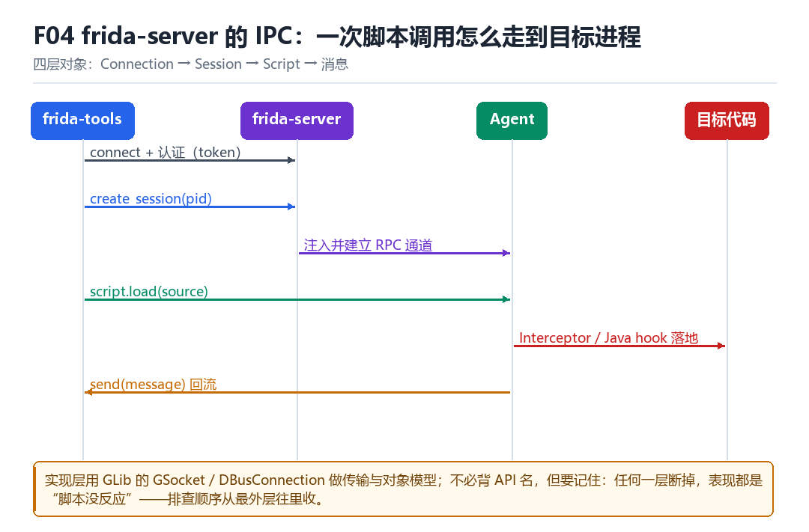

Frida server IPC 逻辑
WebService、Socket、DBusConnection、ControlService、HostSession、AgentSession
不必背类名，但要记住：每条消息都要经过 server 中转。
4.1 四层对象

| 对象 | 作用 | 断开后的表现 |
|---|---|---|
| Connection | 传输通道（TCP / USB） | 全部失联 |
| HostSession | host 与 server 的会话 | 无法枚举进程 |
| AgentSession | server 与 agent 的会话 | 脚本无法加载 |
| Script | 一段代码的运行时 | hook 停止工作 |
4.2 为什么理解 IPC 有用
因为绝大多数“frida 不稳定”的表现，本质是某一层断了或超时了。知道层级，就能快速定位，而不是盲目重装。
1. 传输：adb devices / ping 端口 -> Connection
2. server 存活：frida-ps -U -> HostSession
3. 注入成功：frida -U -p PID -e '1+1' -> AgentSession
4. 脚本逻辑：加 send 打点 -> Script4.3 本章自测
- 四层对象各自断开后的表现是什么？
- 为什么 server 被杀掉后 agent 会失联？
- 给出一条从外到内的排查顺序。
- 如果要让脚本在断连后自动恢复，你会怎么做？
4.4 深入：为什么 server 需要“认证”
frida-server 默认监听 27042，任何能连上这个端口的进程都能控制它。这在多用户 / 多 App 环境里是巨大的风险——所以新版本引入了 token 认证，host 必须带上正确的 token 才能建立 Session。
| 机制 | 作用 | 副作用 |
|---|---|---|
| token 认证 | 阻止未授权连接 | 需要正确配置 |
| Unix socket | 只允许本地连接 | 跨容器时不可用 |
| 端口自定义 | 避免被扫描 | 需要同步配置 |
4.5 实战：连不上时的分层排查
adb devices # 设备在不在
adb forward tcp:27042 tcp:27042 # 转发有没有建立
frida-ps -U # server 有没有响应
frida-ps -H 127.0.0.1:27042 # 直连端口试试
dmesg | tail -30 # 有没有 SELinux 拒绝4.6 原理推演：为什么 IPC 要分“控制面”与“数据面”
控制面是“创建 Session、加载脚本”这类低频操作；数据面是“hook 回调、send 消息”这类高频操作。两者走不同的通道，才能各自优化。
| 面 | 频率 | 通道 |
|---|---|---|
| 控制面 | 低 | HostSession / AgentSession |
| 数据面 | 高 | Script 的消息通道 |
理解了这一点，就能解释一个常见现象：脚本加载很慢，但 hook 回调很快——因为前者走控制面（要建 Session），后者走数据面（已建立的通道）。
4.7 数据细节：一次 send 的路径
JS: send({a: 1})
-> Script 的 message 回调
-> AgentSession 序列化
-> socket 写给 server
-> server 转发给 host
-> 你的 on_message 被调用4.8 深入：server 内部的对象树
把 frida-server 想象成一个小型“进程管理器”：它维护一张“当前有哪些 Device / Session / Script”的表，每个对象都有 id，所有请求都带着 id 来找目标。这样即使同时连着多个进程，也不会串。
| 对象 | 关键字段 | 清理时机 |
|---|---|---|
| Device | id、name、type | 连接断开 |
| Session | pid、对象表、注入状态 | detach |
| Script | id、运行时、消息通道 | unload |
这个设计带来的一个实用推论：如果某个 Session 没被正确 detach，它会一直占着目标进程。表现为“目标进程活着但行为怪异”，或者“再次 attach 时报错”。
4.9 深入：一次异常的传播路径
脚本里抛出的异常，不会让目标进程崩溃——它会被 JS 运行时捕获，打包成 error 消息发回 host，然后由 host 决定是“打印”还是“抛出”。这解释了一个常见现象：脚本报错但 App 安然无恙。
try {
Java.use('com.not.exist.Class');
} catch (e) {
send('load failed: ' + e.message);
}
// 不写 try/catch，异常会冒泡到 host，看起来像“脚本没跑”所以“脚本没反应”有两种完全不同的原因：没加载（host 侧无输出）与加载了但抛异常（host 侧有 error）。看日志的时候一定要区分这两类。
4.10 实战：写一个“连接健康检查”
device = frida.get_usb_device(timeout=3)
session = device.attach(pid)
script = session.create_script('send("ok")')
# 能收到 ok，说明三层都通现场：一次断线暴露的四层
脚本跑得好好的，日志一秒十几行。你手一抖把 USB 线拔了又插回去，终端没报错，REPL 还挂着，可 hook 再也不回调了。敲 frida-ps -U 又能列出进程，于是你开始怀疑脚本、怀疑 App、怀疑手机，唯独没想到问题出在“那条线”本身。
Frida 的结构里有一条硬规矩：host 永远不直接和 agent 说话，agent 也永远不直接和 host 说话。frida-server 是唯一的中转站，一条 send 要穿过 Connection、HostSession、AgentSession、Script 四层。拔线只切断了最外面那层，可里面三层会按各自的策略级联销毁或保持——于是“没报错”和“还在工作”完全是两回事。
把一条 send 拆成八拍
- 你的 JS send(...) → 对 Script 的 message 通道 → 把对象序列化成一条 message → 结果：产生一个待发送信封，JS 线程不等回执，继续跑下一条语句。
- Script → 对 agent 内的 AgentSession → 投递到与 server 之间的专用 pipe / socket → 结果：数据离开目标进程，进入设备端 server 的地址空间。
- server 的 AgentSession → 对 HostSession → 按 session id 找到对应的 host 连接 → 结果：消息被原样转发，server 不解析业务内容，只做路由。
- server → 对 Connection（TCP 或 USB）→ 写回 host → 结果：host 侧
on_message被调用，你终于在终端看到那行日志。 - 反向：host 的 post / rpc.exports 调用 → 对 HostSession → 打包成控制消息 → 结果：server 收到一条低频指令，走的是控制面而不是上面的数据面。
- server → 对 AgentSession → 转发进目标进程 → 结果：agent 的 JS 线程收到一个待执行任务，在下一次消息循环里处理。
- 拔线 → 对 Connection → 内核把 socket 标记成 EOF → 结果：server 发现对端消失，按版本策略销毁 HostSession；host 的 send 已经写进旧通道，直接丢掉。
- server → 对 AgentSession / Script → 级联 detach 或保留 agent → 结果：可能是“hook 还挂着但消息没人收”，也可能是整个 agent 自卸载，两者终端都表现为安静。
按层复现：把断在哪一层看出来
从外往内敲四条命令，每通过一条就把一层划掉。这个顺序的价值在于：它把“frida 不稳定”这种模糊抱怨，变成一个有明确失败点的二分查找。最后再用一个只发一条 send 的最小脚本，把断线后的“安静”亲手复现出来。
# 第 1 层：传输
adb devices
adb forward --list
# 第 2 层：HostSession 是否活着
frida-ps -U
# 第 3 层：能否 attach 并建立 AgentSession
frida -U -p $(pidof com.example.app) -e 'send(Process.id)'
# 第 4 层：脚本通道
# ping.js 内容：send({at: 'loaded'}); rpc.exports = { now: function () { return Date.now(); } };
frida -U -p $(pidof com.example.app) -l ping.js算成功：adb devices 列出设备、adb forward --list 有 27042 之类的转发；frida-ps -U 列出目标包名；-e 打印出 PID；-l ping.js 立刻收到 loaded，在 REPL 里调 now() 能拿到时间戳。算失败：adb devices 空或 offline 断在传输；frida-ps -U 报 Failed to enumerate applications 断在 HostSession（通常是 server 进程被杀或SELinux 拦了）；-e 报 Failed to attach 断在 AgentSession；只有前三条都过、ping.js 却没输出，才是 Script 层。拔线重插后重复第 4 条：若无输出且不报错，就复现了“通道已换、Session 未重建”的静默故障。
| 检查命令 | 正常输出 | 异常输出 | 断点所在层 |
|---|---|---|---|
| adb devices | 列出设备 serial | 空 / offline | Connection 传输 |
| frida-ps -U | 目标包名与 PID | Failed to enumerate | HostSession |
| frida -U -p PID -e ... | 打印 PID | Failed to attach | AgentSession |
| -l ping.js 的 send | 收到 loaded | 完全无输出 | Script |
| 拔线重插后再 send | 仍持续回调 | 静默、无异常 | Connection 已换，未重建会话 |
“所有消息必经中转、控制面与数据面分开”这条结论，到 LSPosed 部 L06 Binder、FD 与 linker 账本收口 会变成同一张账：模块与 framework 之间走的也是 Binder 事务，多出来的 socket 与 FD 同样要被逐项收口；KPM 部 M02 内核观察面与基础检测处理 则从内核侧看 netlink / USB / VPN 连接，把“这条通道存在”本身当成一等观测信号，你在用户态怎么过滤 maps 都躲不开。